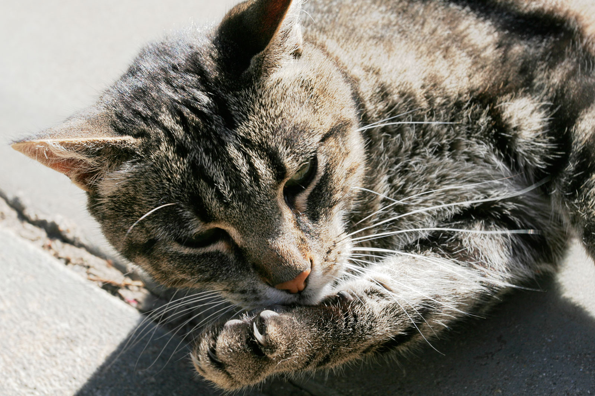

Động vật có vú


Lớp Thú (danh pháp khoa học: Mammalia /məˈmeɪli.ə/, còn được gọi là Động vật có vú hoặc Động vật hữu nhũ) là một nhánh động vật có màng ối nội nhiệt được phân biệt với chim bởi sự xuất hiện của lông mao,[a] ba xương tai giữa, tuyến vú, và vỏ não mới (neocortex, một khu vực của não). Não bộ điều chỉnh thân nhiệt và hệ tuần hoàn, bao gồm cả một trái tim bốn ngăn. Lớp Thú bao gồm các động vật lớn nhất còn sinh tồn (như cá voi xanh và một vài loài cá voi khác), cũng như những động vật thông minh nhất - như voi, vài loài linh trưởng và cá voi. Kích thước cơ thể động vật có vú dao động từ 30–40 mm (1,2–1,6 in) dơi ong nghệ tới 33 mét (108 ft) cá voi xanh.
Tên khoa học Mammalia được đặt bởi Carl Linnaeus năm 1758, xuất phát từ tiếng Latin mamma ("vú"). Tất cả con cái cho con bú bằng sữa tiết ra từ tuyến vú. Theo Mammal Species of the World, 5.416 loài được biết đến vào năm 2006. Lớp Thú được phân thành 1.229 chi, 153 họ và 29 bộ.[1] Năm 2008, IUCN đã hoàn thành việc khảo sát đánh giá động vật có vú toàn cầu kéo dài 5 năm với sự tham gia của 1.700 nhà khoa học để lập Sách đỏ IUCN, trong đó ghi nhận 5.488 loài được công nhận vào cuối thời kỳ đó.[2]
Trừ 5 loài thú đơn huyệt (đẻ trứng), tất cả động vật có vú còn lại đều đẻ con. Ba bộ đa dạng và giàu số lượng loài nhất là Bộ Gặm nhấm (chuột, chuột cống, hải ly, chuột lang nước, chuột lang, và các loài khác), Bộ Dơi (dơi), và Bộ Chuột chù (chuột chù, chuột chũi và solenodon). Các bộ đa dạng khác là Bộ Linh trưởng, Bộ Guốc chẵn, và Bộ Ăn thịt (mèo, chó, chồn, gấu, hải cẩu và họ hàng).[1] Trong khi việc phân loại các động vật có vú ở cấp độ họ đã tương đối ổn định, phương pháp phân loại khác nhau ở các cấp độ cao hơn- cận lớp, phân lớp, siêu bộ - xuất hiện trong sách vở đương thời, đặc biệt là cho các loài thú có túi. Thay đổi nhiều trong thời gian gần đây đã phản ánh kết quả phân tích di truyền phân tử. Kết quả từ di truyền phân tử đã dẫn đến việc áp dụng các nhóm mới như Afrotheria và việc từ bỏ các nhóm truyền thống như sâu bọ.
Loài tổ tiên của động vật có vú thuộc nhóm synapsid (Mặt thú), một nhóm bò sát bao gồm cả Dimetrodon, pelycosaurs, sphenacodont... Vào cuối kỷ Cacbon, nhóm này tách ra từ dòng sauropsid (nhóm Mặt thằn lằn, đã phát triển thành các loài bò sát, cá sấu, khủng long và các loài chim ngày nay). Là hậu duệ của 1 loài synapsid (đôi khi được gọi là bò sát giống động vật có vú), các động vật có vú đầu tiên xuất hiện trong kỉ Creta (phấn trắng) thời đại Trung Sinh, khoảng 225 triệu năm trước. Các loài động vật có vú hiện đại xuất hiện trong các giai đoạn của kỷ Paleogen và Neogen, sau sự tuyệt chủng của loài khủng long 66 triệu năm trước đây.
Quay về trang chủ